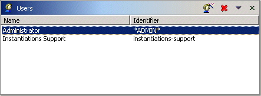
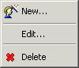
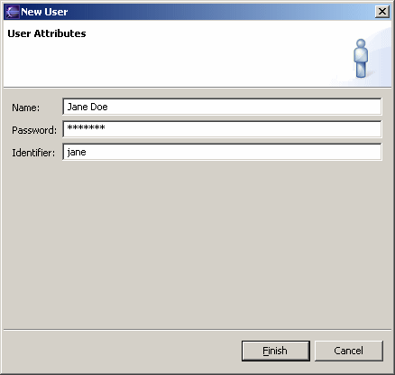

Collaboration Users View
This view is for adding, modifying, and deleting users from the collaboration server. It is part of the Collaboration Administration perspective.

A user essentially consists of a name and a password. It is the means by which by which the workbench identifies itself to the collaboration server.
Only the administrator may add and delete users unless the server allows open enrollment, in which case anyone may add a user, and users may delete themselves. In any case, users may modify themselves.
Tool Bar
The tool bar has the following buttons
- Add a user using the user wizard (described below).
 Delete the selected users.
Delete the selected users.
The tool bar menu contains the following items
- Refresh - Refresh this view from the collaboration server. (The view does not update automatically in response to changes on the server.)
- Import Users - Add users described in an XML file produced by the Export Users item.
- Export Users - Export the users to an XML file suitable for use by the Import Users item.
User List
The columns in this list show the user name and identifier. If it is open, the properties view shows additional information about the selected user, such as the password.
The context menu contains the following items
|
 |
User Wizard
The user wizard is for adding or editing a user.

The name is used for display purposes. It must be unique. It is typically the user's full name.
The password is used to authenticate the user.
The identifier is used internally to identify a user. It must be unique. A typical choice is the user's first name.